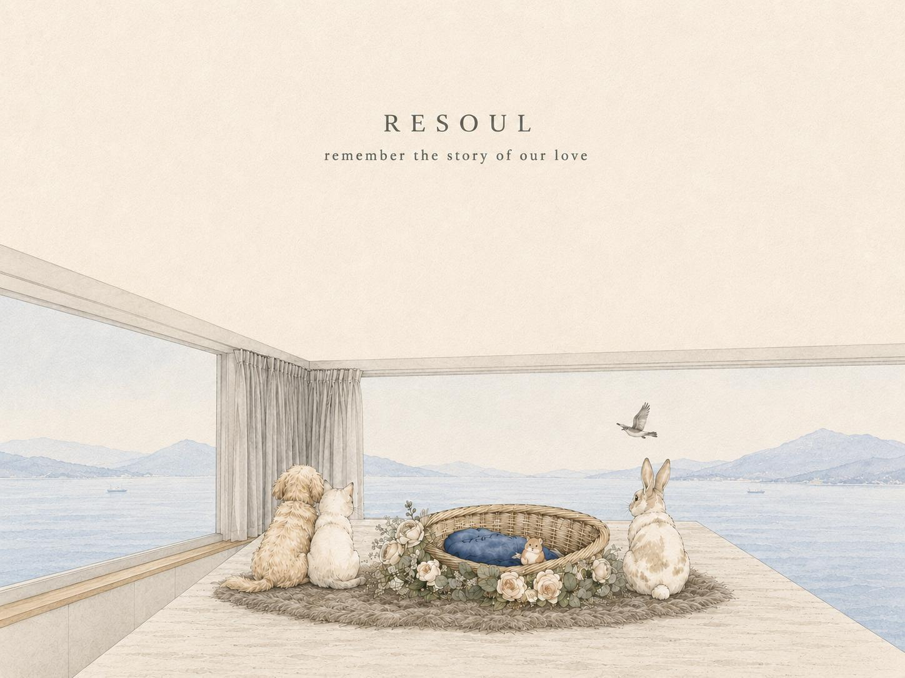

About RESOUL
Because their life mattered,
the farewell deserves care too.
Every life holds a story worth remembering.
RESOUL believes a pet is not a chapter in your life, but part of the family's story. When life reaches its final stage, what an owner needs is not just to complete a procedure, but someone willing to listen, explain, coordinate and respect every choice.
We connect what used to be scattered — independent registered vet contact, private pick-up, farewell ceremony, individual cremation, memorial and after-loss support. Each professional service is handled independently by the relevant partner, while RESOUL walks with you through the next step, easing the pressure of searching and repeating yourself at the hardest time.

"We don't only arrange how a pet leaves — we also care for how the owner walks through the parting."
24/7 Gentle Pick-Up Support
Day or night, we bring your beloved home with care.
Expert Grooming with Love
A final grooming, so they say goodbye with grace.
Cozy Private Resting Haven
A tranquil room where your beloved rests in a gentle setting.
Exclusive Memorial Products
Handcrafted, so love and memory live on forever.
Gentle Cremation & Cherished Urns
Respectful companionship, with fine urns to treasure the memories.
Heartfelt Farewell with Sea View
A ceremony in the sea-view room — solemn yet warm.
What we value
To every owner,
this is our promise.
Clarity
We explain the process, roles, timing and fees before the service, so you know the next step.
Respect
We care for every pet as our own family — no shared rides, no detours, privacy valued.
No rush
You can handle only the essentials first; some memorial choices can be confirmed later, within a set window.
Continuous company
From the first contact, arrival, ceremony and ashes coming home, to the days after goodbye, we stay in touch.
Clear roles
Medical and psychological judgment is handled by qualified professionals; RESOUL never replaces those roles.
Founder Vivian Chong and the RESOUL team, together with trained drivers and partner professionals, safeguard every journey. Each vet and support partner uses only verified names, qualifications and registration; medical and psychological services are provided independently by the relevant professionals.
FAQ
About our service,
things you may want to know.
In a quieter spot at home, arrange a comfortable box lined with their favourite towel. The body stiffens after about two hours, so you can gently pose them in a sleeping position and cover them with a towel. Keep the room cool — use air-conditioning in summer, place ice packs by the head and belly, and set toys, food and photos nearby. Then call the Resoul 24-hour hotline 6476 2951 as soon as possible; our staff will arrive within two hours to bring your pet in for grooming. In the meantime you may brush their fur, wipe the body, or offer blessings per your beliefs.
Yes. As each pet's condition differs, please discuss feasibility with our staff in advance.
Resoul offers 24-hour pet pickup — from home or any veterinary clinic in Hong Kong. The service fee covers pickup across all districts (Discovery Bay incurs an extra HK$300; walk-up buildings with stairs incur a surcharge). You may tell us your pet's condition in advance to speed up pickup.
You may press the button to send your pet off; afterwards you'll wait in the lounge area. The whole process takes about two hours, and you can take your pet home right after. Everything is filmed to ensure the process is transparent and accurate.
One free change is allowed, with 48 hours' notice.
We recommend collecting within a week. You may authorise a family member, or arrange a courier to help.
A moderate amount of food, treats, paper offerings and fresh flowers are fine; plastic is not recommended as it affects the quality of the ashes.
Of course. Let us know in advance to keep the fur collected during grooming for a keepsake, or brush their fur yourself during the memorial to keep some.
Cats, dogs, rabbits, hamsters, birds or other animals — Resoul welcomes them all. Each is a treasure in someone's heart.
If there's an opening that day, we'll do our best to arrange it; the actual timing depends on the day's bookings.
A HK$1,800 deposit is required in advance, with the balance paid on the day of the memorial. We accept cash, EPS, PayMe, FPS and credit cards.
Remember the story of our love.
When you're ready, we're here — to listen first, then help you sort the next step.